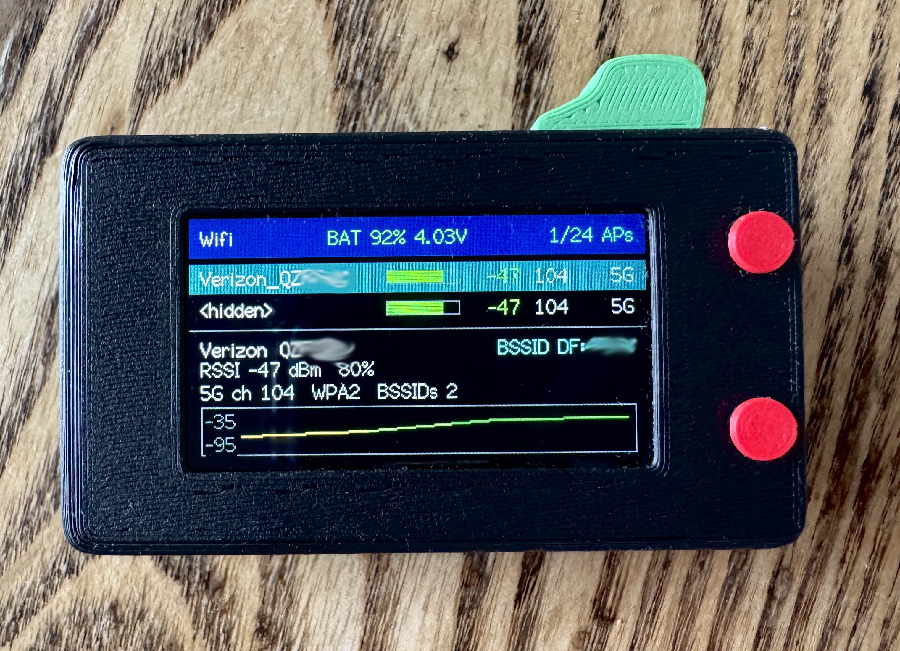
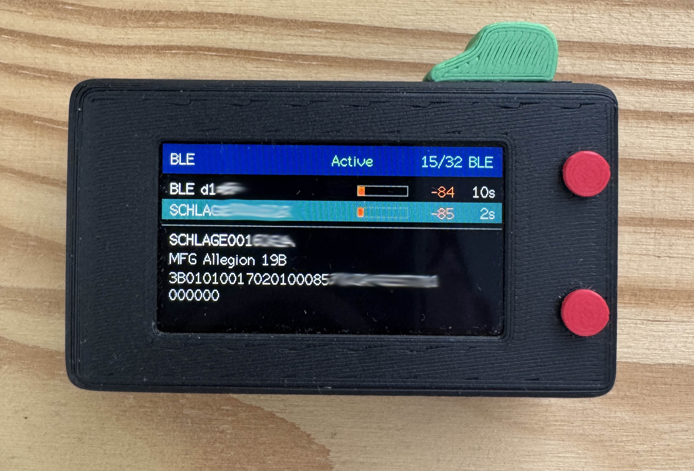
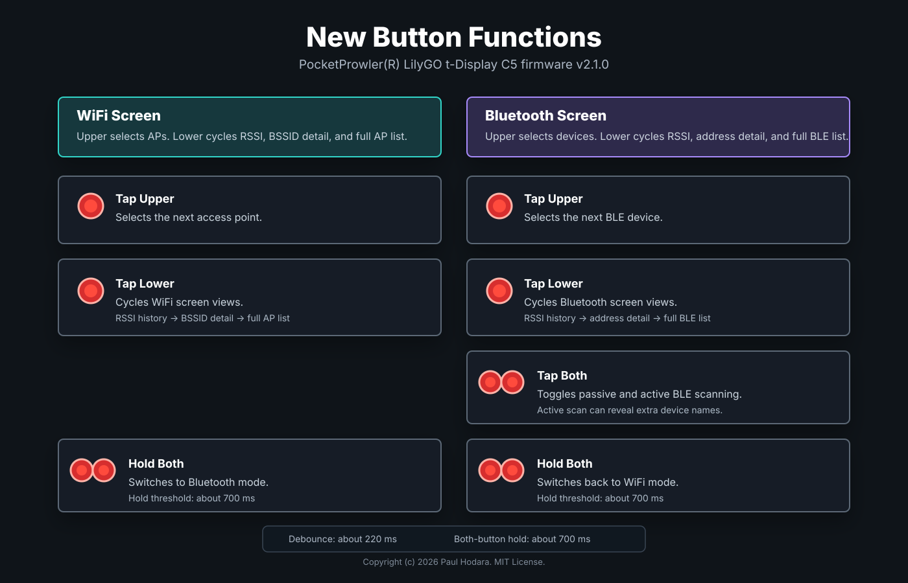
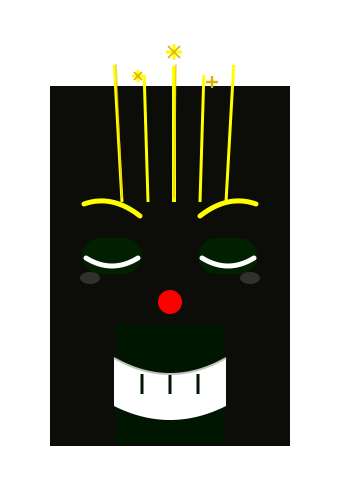
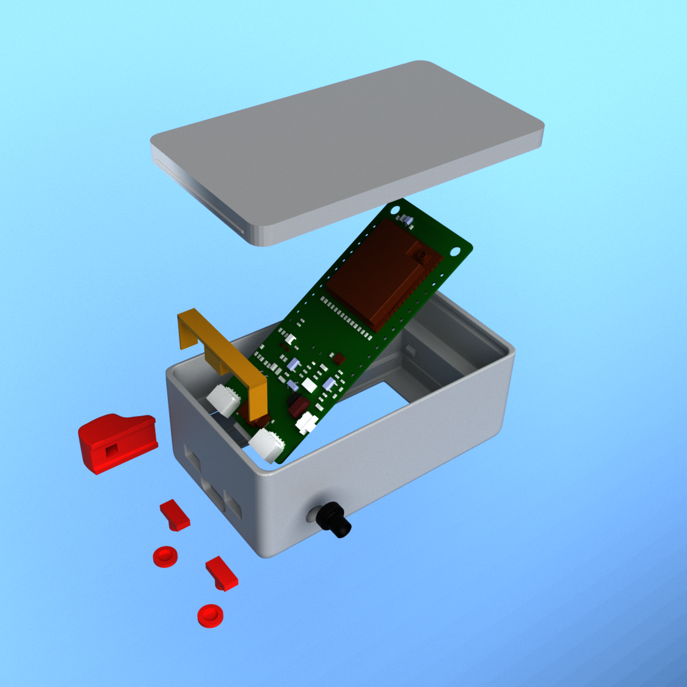

Pocket
Prowler
A pocket WiFi and Bluetooth scanner for seeing the radio chatter around you.
What It Is
PocketProwler turns a LilyGO T-Display C5 into a handheld WiFi and BLE field scanner with a built-in screen, two top buttons, and battery readout.


Install Firmware
The easiest path is the release image. It includes the bootloader, partition table, and app, so fresh installs and updates both flash at offset 0x0.
No-build flashing
pip install --upgrade esptool esptool.py --chip esp32c5 --port /dev/ttyACM0 write_flash 0x0 firmware.factory.bin
| Step | Action |
|---|---|
| 1 | Download firmware.factory.bin from the latest GitHub release. |
| 2 | Connect the LilyGO T-Display C5 with USB-C. |
| 3 | Run the flash command using your serial port. On Windows it may look like COM5. |
| 4 | If upload does not start, hold BOOT, tap RST, release RST, then release BOOT. |

For development builds, use pio run, pio run --target upload, and pio device monitor from the project folder.
Button Map
Two top buttons control everything. The selected row wraps back to the first item when you reach the end of a list.

| Control | WiFi Mode | BLE Mode |
|---|---|---|
| Tap upper | Select next access point | Select next BLE device |
| Tap lower | Cycle RSSI history, BSSID detail, and full AP list | Cycle RSSI history, address detail, manufacturer data, and full BLE list |
| Tap both | No action | Toggle passive or active BLE scanning |
| Hold both for about 700 ms | Switch to BLE mode | Switch to WiFi mode |
WiFi Scan
WiFi mode is the startup view. It passively scans nearby access points and keeps the screen focused on the strongest and selected networks.
| Field | Meaning |
|---|---|
| SSID | Network name, or a hidden-network marker when the name is not advertised. |
| RSSI | Signal strength in dBm. Less negative values are stronger. |
| Channel / band | Radio channel and 2.4 GHz or 5 GHz band when available. |
| Security | Open, WPA, WPA2, WPA3, or mixed security labels. |
| BSSID count | Same-channel crowding hint used instead of unreliable raw bandwidth data. |

Changing the selected access point clears the old RSSI history so the graph can refill for the new BSSID.
Bluetooth Scan
BLE mode listens for nearby advertisements from phones, watches, earbuds, sensors, tags, smart-home devices, and other small broadcasters.
| Field | Meaning |
|---|---|
| Name | Advertised device name, when a device chooses to share one. |
| Address | BLE address. Some devices rotate this for privacy. |
| Address type | Public, random, public identity, or random identity. |
| Seen | Age of the most recent advertisement. |
| Manufacturer data | Vendor-specific advertisement bytes, shown as a company hint plus length when recognized. |
| Service UUID | First advertised service UUID, with a count when more are present. |

BLE devices stay visible for about 60 seconds after their last advertisement, which keeps intermittent devices from flickering away too quickly.
Read Signal
Signal strength is useful for rough proximity, not exact distance. Walls, antenna orientation, body blocking, and device transmit power all change the reading.
| RSSI Range | Field Reading | Practical Use |
|---|---|---|
| -30 to -50 dBm | Very strong | Likely nearby or line-of-sight. |
| -51 to -67 dBm | Strong | Good quality signal for most scanning and identification work. |
| -68 to -80 dBm | Moderate | Usable, but movement and obstacles may matter. |
| Below -80 dBm | Weak | Farther away, blocked, or low-power broadcaster. |
Battery
PocketProwler reads the AXP2602 PMU for voltage, current, and state of charge. Voltage is the best quick truth check when charging or near full.
| Voltage | Meaning |
|---|---|
| 4.18 V to 4.20 V | Effectively full. |
| 4.16 V to 4.17 V | Very close to full. |
| 4.10 V | High, but still charging. |
| 4.04 V to 4.05 V | Not full. Try a different cable, charger, or port if it stays here while plugged in. |
| 3.40 V to 3.50 V | Low enough for a battery learning-cycle discharge target. |

Small one-percent changes are intentionally smoothed so the header does not flicker while scanning.
Case And Ports
The optional printed case adds room for an internal LiPo, power switch, and button caps while keeping the USB-C port available.
| Connector | Pins | Good For |
|---|---|---|
| Left near USB-C | GND, 5V, 3V3, TXD, RXD | UART devices such as GPS, serial sensors, or test readers. |
| Right near USB-C | GND, 3V3, SDA, SCL | I2C sensors such as BME280, SHT31, BMP280, BH1750, SGP30, SCD40/SCD41, RTC modules, and Qwiic or Stemma QT boards. |

Case Downloads
Print the PocketProwler enclosure with room for the board, internal LiPo, power switch, and control buttons.
Troubleshooting
| Symptom | Try This |
|---|---|
| Upload will not start | Use the BOOT and RST sequence, then retry upload. |
| No BLE names | Switch BLE to active scan. Some devices still stay unnamed by design. |
| Battery percent looks stuck | Watch voltage instead. Percent is smoothed to avoid flicker. |
| Weak or jumpy RSSI | Move slowly, rotate the scanner, and compare the trend over several samples. |
| Serial output needed | Run pio device monitor at 115200 baud. |

For firmware work, pin definitions live in include/pin_config.h and the main app logic lives in src/main.cpp.